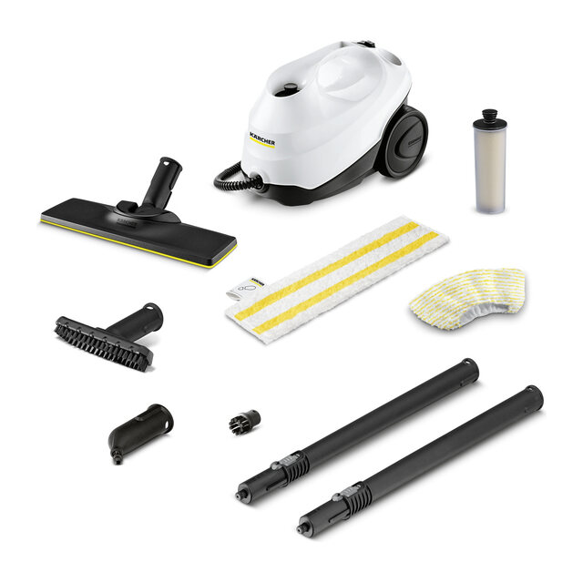
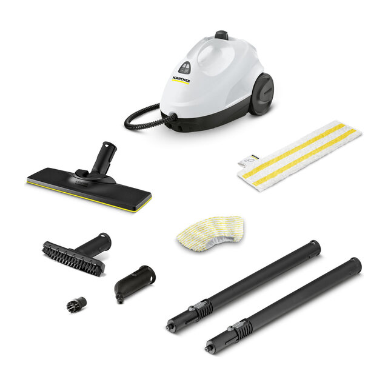
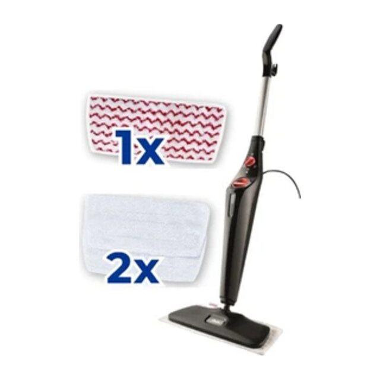
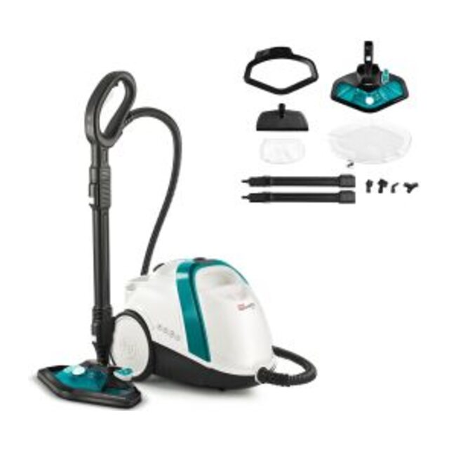
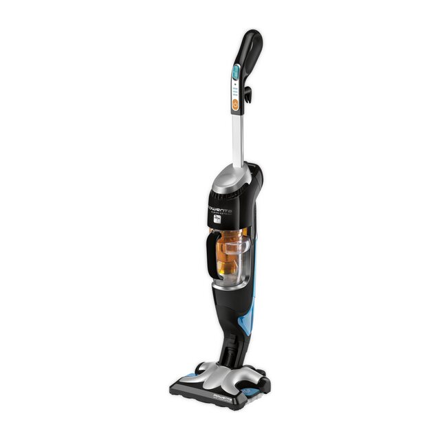

Meilleur choixKärcher SC 3 EasyFix
Pour ceux qui veulent un seul appareil pour les sols et les petites surfaces.
- Chauffe en quelques dizaines de secondes
- Réservoir d'un litre
La vapeur nettoie et dégraisse les sols avec de l'eau seulement. Reste à choisir entre le balai vapeur, léger et rapide, et le nettoyeur traîneau, plus polyvalent.

Meilleur choixPour ceux qui veulent un seul appareil pour les sols et les petites surfaces.

Petit budgetPour un usage régulier sur sols durs avec un budget plus modéré.

Balai vapeurPour laver les sols vite, sans sortir un gros appareil.
Liens affiliés : si vous achetez via eux, nous touchons une petite commission, sans surcoût pour vous. Cela ne change ni l'ordre ni l'avis.
| Modèle | Idéal pour | Type | Usage | Prix | Acheter |
|---|---|---|---|---|---|
| Kärcher SC 3 EasyFix | Meilleur choix | Traîneau | Sols, joints, surfaces | €€ | Voir sur Amazon |
| Kärcher SC 2 EasyFix | Petit budget | Traîneau | Sols, joints | €€ | Voir sur Amazon |
| Vileda Steam XXL | Balai vapeur | Balai vapeur | Sols uniquement | € | Voir sur Amazon |
 Polti Vaporetto Smart 100_T | Chaudière | Chaudière | Sols, vitres, joints | €€ | Voir sur Amazon |
 Rowenta Clean & Steam RY7535 | Aspire et vapeur | Balai aspirateur-vapeur | Sols uniquement | €€ | Voir sur Amazon |
Pour qui : ceux qui veulent un seul appareil pour les sols et les petites surfaces.
Pour qui : un usage régulier sur sols durs avec un budget plus modéré.
Pour qui : laver les sols vite, sans sortir un gros appareil.
Pour qui : un nettoyage plus intensif des surfaces et des recoins.
Pour qui : passer l'aspirateur et la vapeur sans changer d'appareil.
Le choix dépend de ce que vous voulez nettoyer : seulement les sols ou aussi les joints, la douche et les vitres.
| Critère | Ce qu'il faut vérifier | Pourquoi c'est important |
|---|---|---|
| Type d'appareil | Balai vapeur ou nettoyeur traîneau | Le balai est plus léger ; le traîneau ajoute des accessoires pour les recoins. |
| Temps de chauffe | De 30 secondes à plusieurs minutes | Une chauffe rapide donne envie de l'utiliser souvent. |
| Réservoir | Contenance en litres | Un grand réservoir permet de laver plus de surface sans recharge. |
| Type de sol | Carrelage, parquet verni, stratifié | Le parquet non traité, le vinyle fragile et certains stratifiés craignent la vapeur : lisez la notice. |
| Anticalcaire | Cartouche ou eau déminéralisée | Dans une eau calcaire, c'est l'entretien qui prolonge la vie de l'appareil. |
L'humidité et la chaleur peuvent le gonfler ou le ternir.
Certains sols sont garantis sans vapeur.
Le calcaire encrasse la chaudière et réduit la vapeur.
Sur une graisse incrustée, un détergent reste utile.
Elle assainit les surfaces grâce à la chaleur, sans produit chimique, mais le résultat dépend du temps de contact et de la surface.
En général oui, avec la cartouche anticalcaire. Si votre eau est très calcaire, l'eau déminéralisée est plus prudente.
Carrelage et pierre sans souci en général. Pour le parquet et le stratifié, vérifiez la notice.
Pour les sols seulement, oui. Pour les joints, les vitres ou la douche, il faut des accessoires.
Nous comparons les fiches des fabricants, les notices et les retours de propriétaires, en privilégiant ce qui supprime réellement une tâche plutôt que les chiffres marketing. Aucune marque ne paie pour figurer ici. Lire notre méthode.